Toutes les photos de ce site proviennent de chantiers que nous avons réalisés. Aucune image d'illustration, aucune banque d'images.
[Fiches chantier détaillées à ajouter : ville, surface, lots réalisés, durée et contrainte technique rencontrée. C'est ce qui convertit les architectes.]
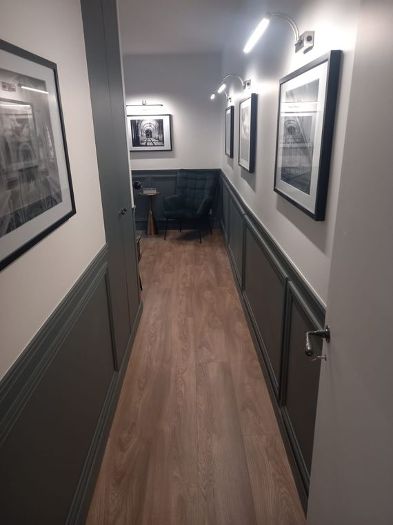
Couloir à soubassementPeinture · ParisCouloir vers séjourPeinture · ParisCuisine et parquet chevronPeinture · Paris
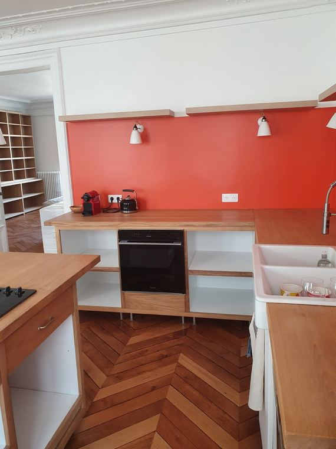
Plan de travail et chevronsPeinture · ParisSalle de bain carreléeCarrelage · 94Escalier repeintPeinture · 94Parquet chêneParquet · 94Bibliothèque sur mesureAgencement · ParisLimon et garde-corpsPeinture · 94
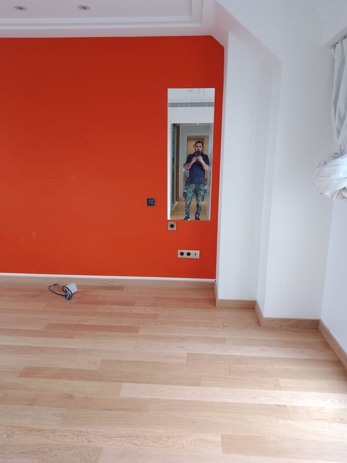
Chambre, mur peintPeinture · 94Séjour et parementPeinture · 94
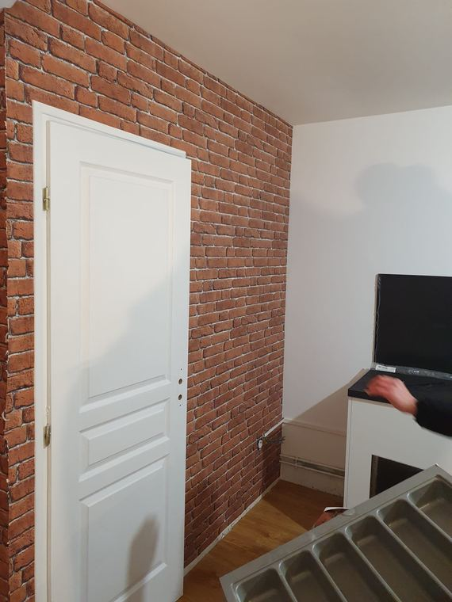
Mur brique et portePeinture · Paris
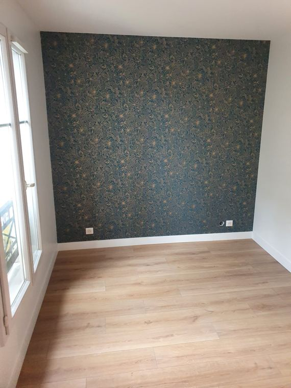
Papier peint panoramiquePeinture · Paris
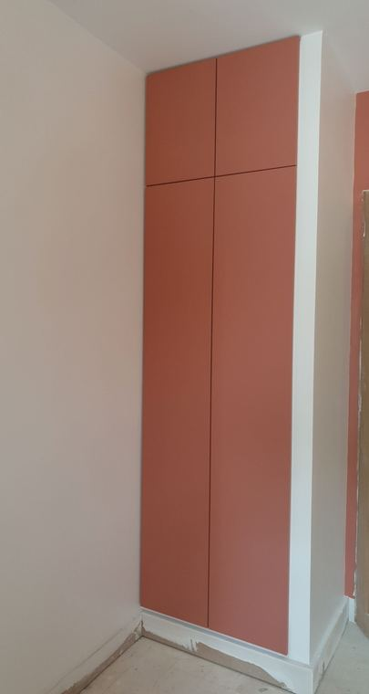
Placard peintPeinture · Paris
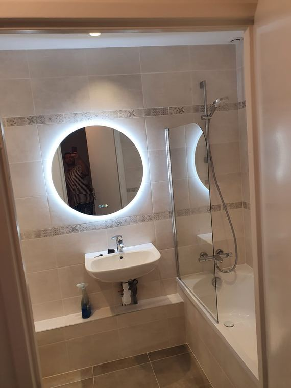
Salle de bain complèteCarrelage · 94
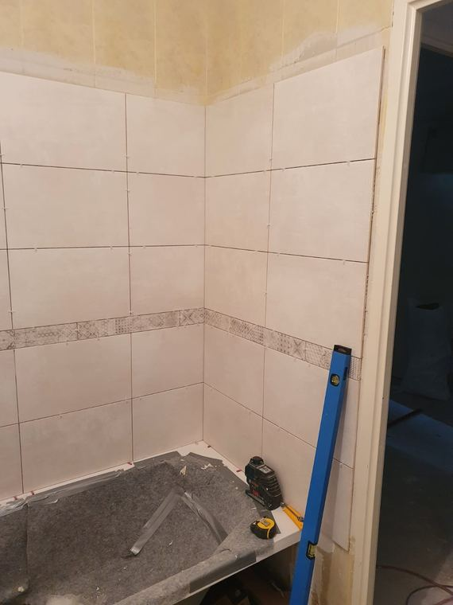
Douche, faïence et friseCarrelage · 94
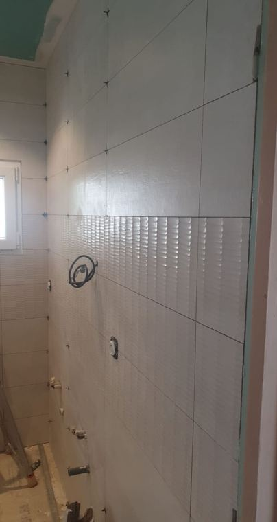
Douche à l'italienneCarrelage · 94
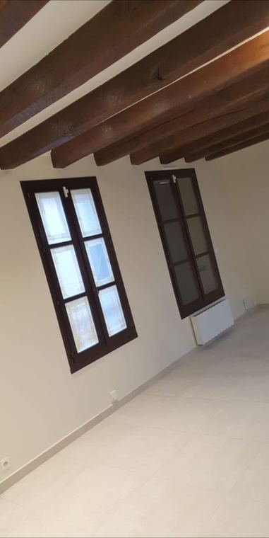
Grand format sous poutresCarrelage · 77
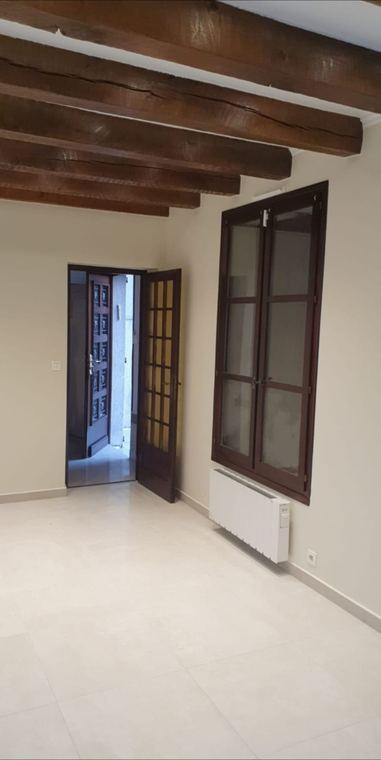
Pièce carreléeCarrelage · 77
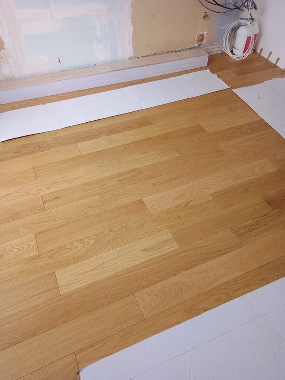
Pose en coursParquet · 94
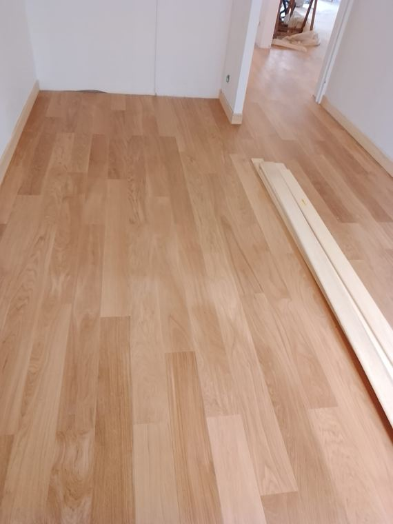
Pièce livréeParquet · 94
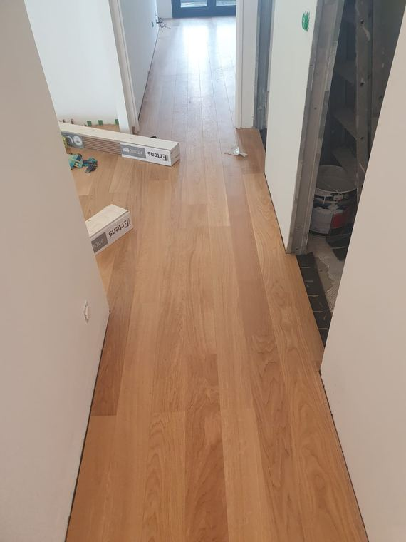
Couloir en continuParquet · 94
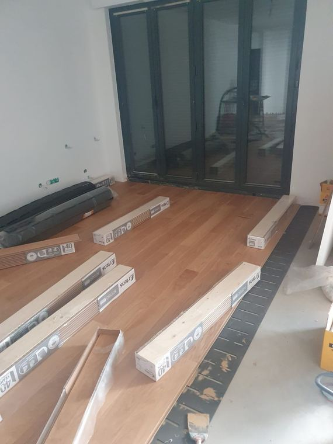
Pose devant baie vitréeParquet · 92
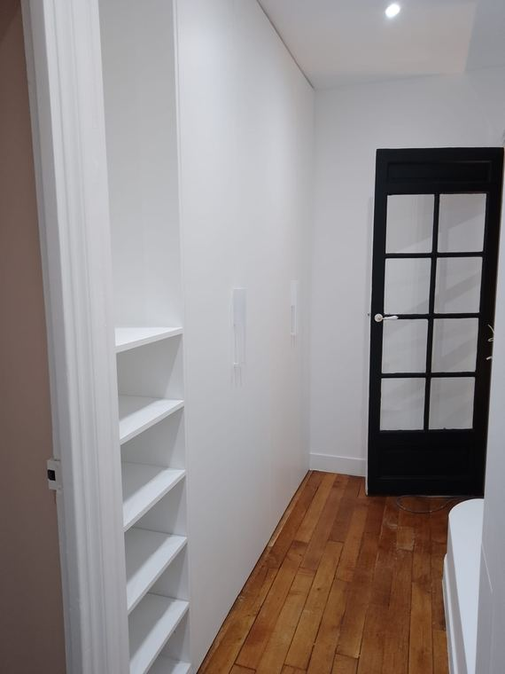
Parquet et porte vitréeParquet · Paris
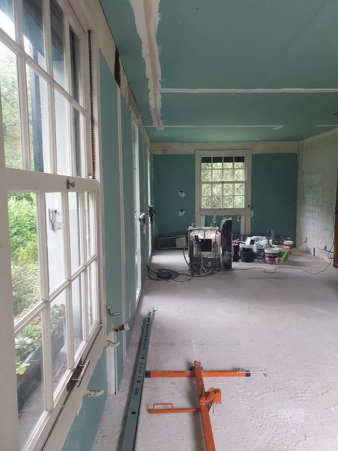
Grande pièce, plaques hydroPlâtrerie · 77
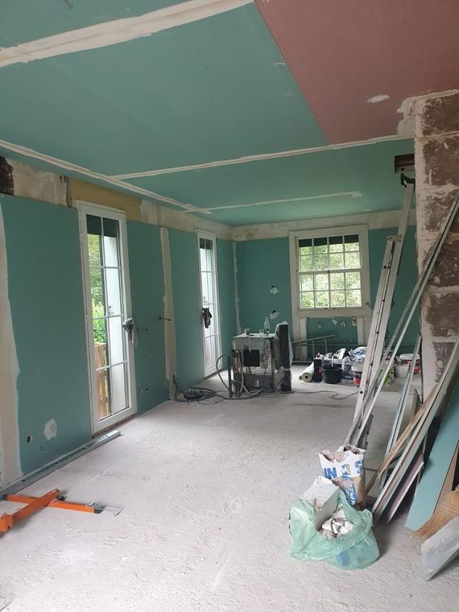
Rénovation lourdePlâtrerie · 77Isolation sous rampantsPlâtrerie · 94Bandes et enduitPlâtrerie · 94
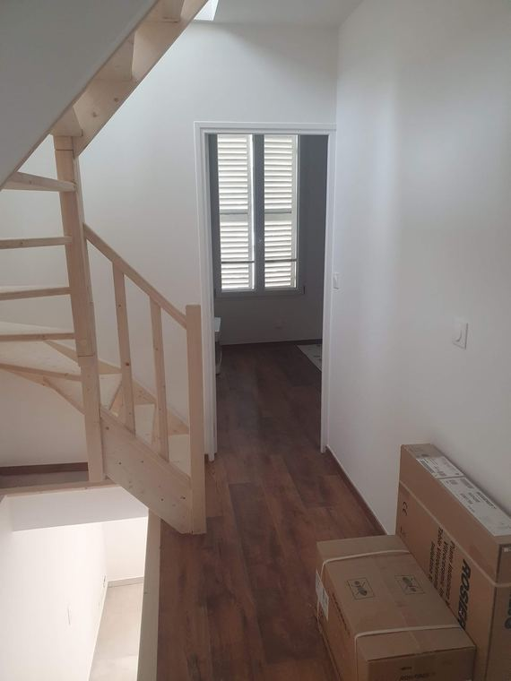
Cage d'escalier livréePlâtrerie · 94
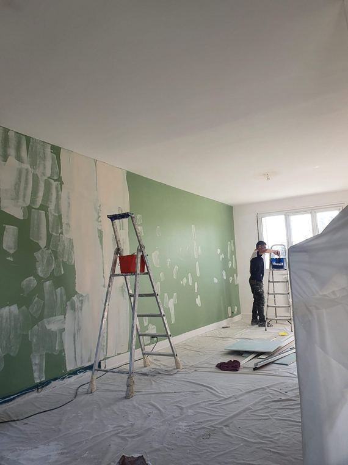
Préparation des mursChantier · 94Bibliothèque à casiersAgencement · Paris
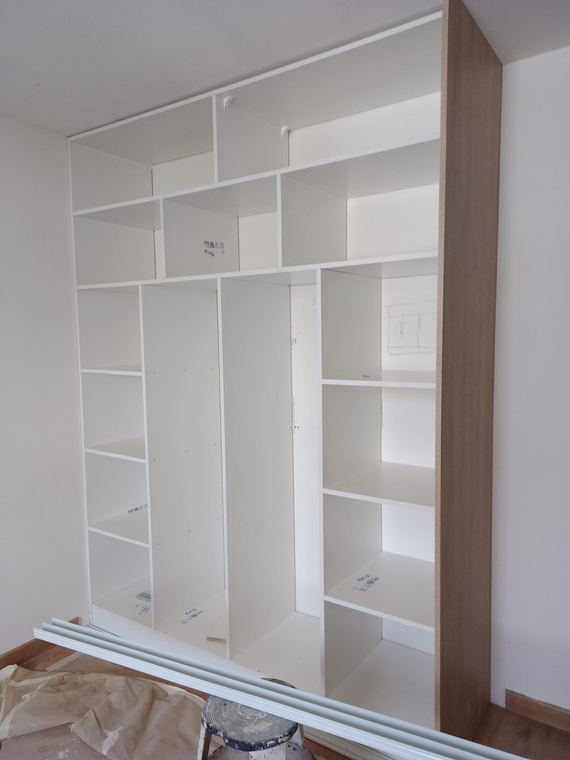
Dressing sur mesureAgencement · ParisPlacard sous penteAgencement · 94
Passer à l'action
Réponse sous 24 h
Un projet du même type ?
Envoyez-nous vos photos et vos plans, nous vous rappelons dans la journée.